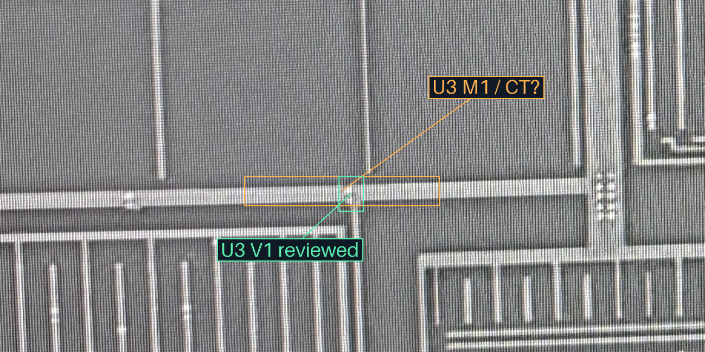
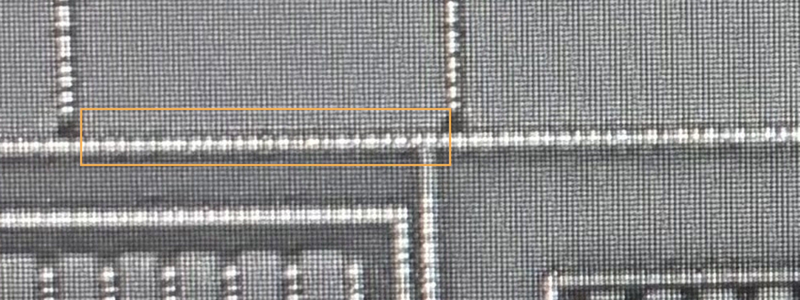

当前唯一新增端子问题
U3所在宽M1横带，是否经POLY照片上圈示的CT行接入对应AA环／体端？可答“是”“接其他端子”或“仍不清楚”。只核导体到端子的连接，不计孔、不重新审核N2／U3／A/B分组。
M1横带、POLY照片CT行、AA环候选分别在原生照片定位，颜色框尚不是已接受跨层对应。请先核位置与连接；环／体端身份若不能确定，可与导通分开保留未知。
下列分别在各层原生照片定位；并未按相同像素坐标投影或宣称精确对齐。
标框是候选范围，不是单孔边界；可打开原图及完整放大图。
返回联合中样
M1宽上下文
原图 · 大字标记

原图 · 大字标记

POLY宽上下文
原图 · 大字标记

原图 · 大字标记

AA宽上下文
原图 · 大字标记

原图 · 大字标记